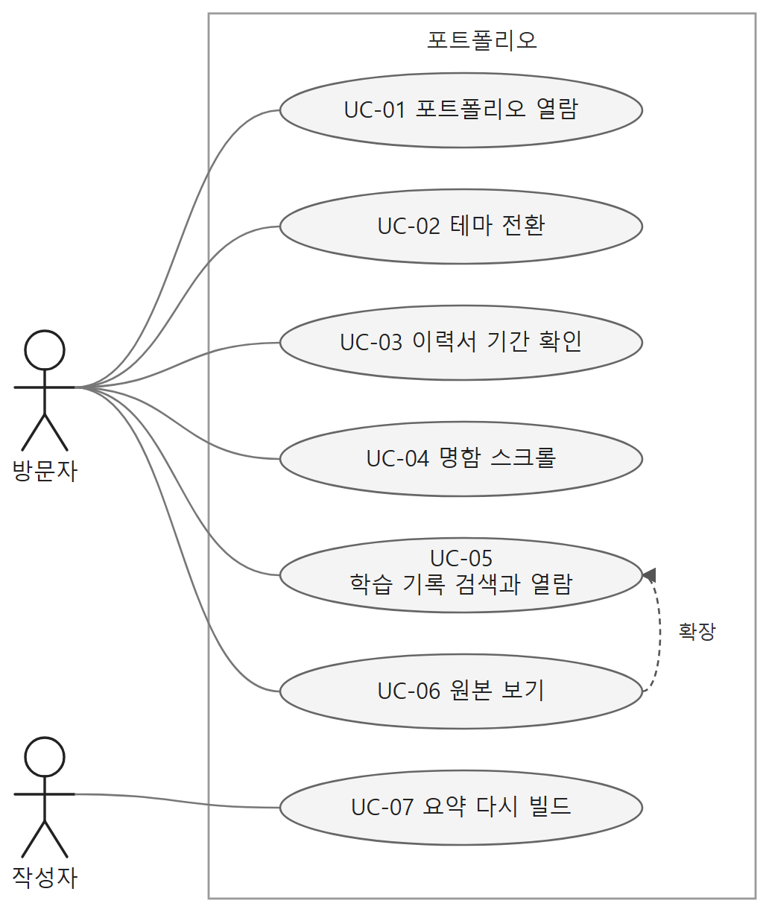
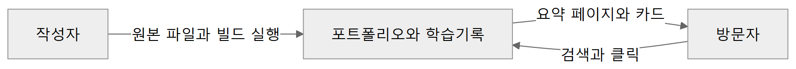
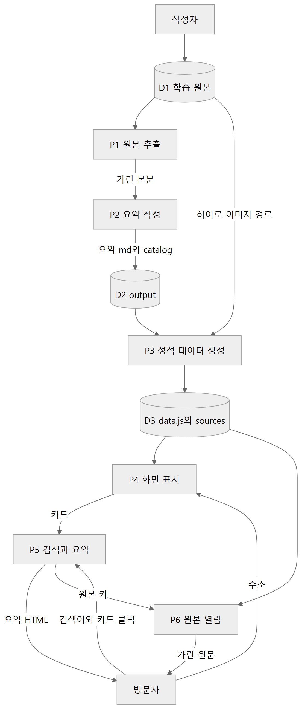
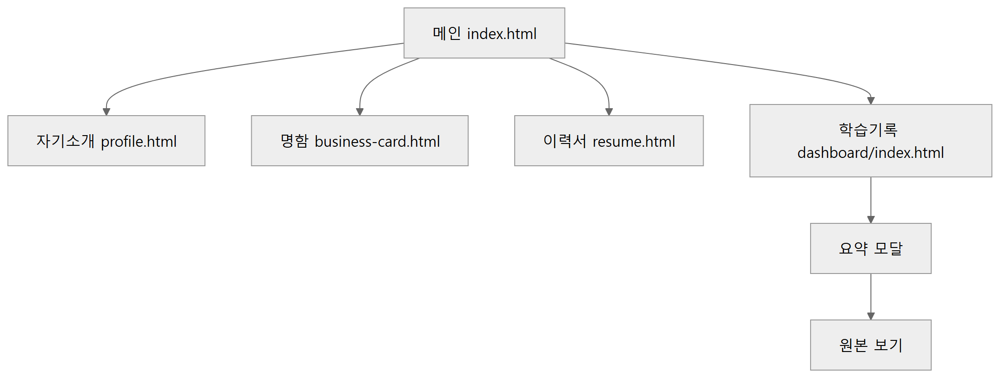
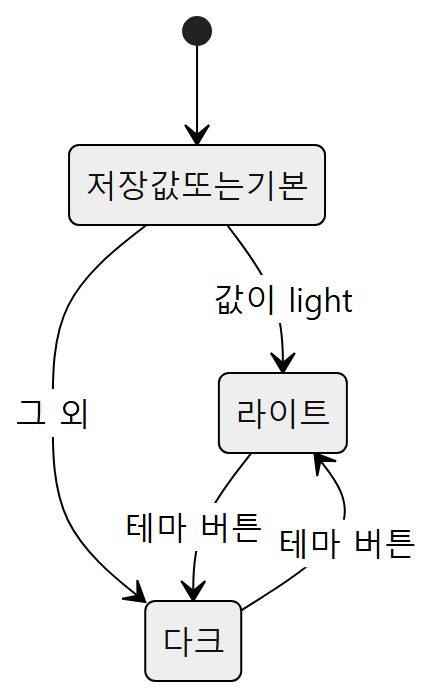
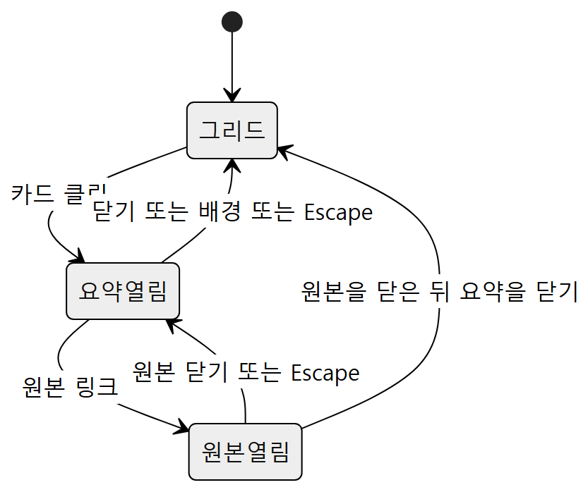
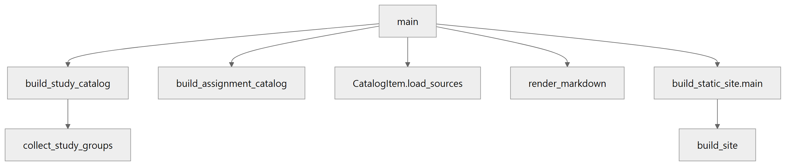
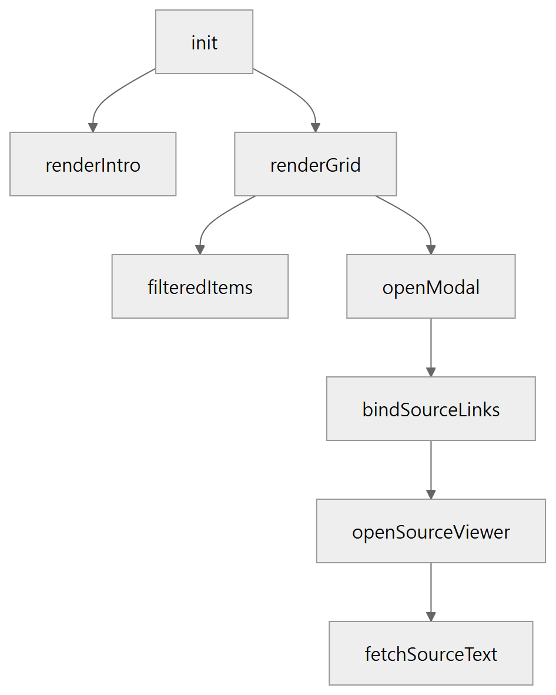

이 저장소는 취업 지원용 정적 웹 사이트다. 방문자는 포트폴리오 메인, 이력서, 자기소개, 온라인 명함, 학습 기록 대시보드를 본다. 작성자는 학습 노트와 과제 문서를 요약 마크다운과 대시보드 데이터로 다시 만든다.
서버 프로세스는 없다. 브라우저가 HTML, CSS, JS를 읽고, 대시보드 데이터는 파이썬 스크립트가 미리 만들어 둔다. data/ 안의 과제 프로그램 소스 코드는 이 명세의 대상이 아니다.
함수와 클래스의 줄 단위 설명은 docs/code-reference.md에 있다. 이 묶음은 요구부터 시험까지의 기술문서다.
방문자가 지원 동기, 이력, 자기소개, 명함, 학습·과제 기록을 한 사이트에서 읽고, 작성자가 학습 원본이 바뀌면 요약과 대시보드 데이터를 다시 만들 수 있어야 한다.
index.html, cv/, cover_letter/, online_business_card/, study_note_record_organization/dashboard/, study_note_record_organization/scripts/data/ 안의 과제 프로그램 코드, Visual Studio 생성물, 이미 만들어진 output/ 원문을 사람이 고치는 일portfolio-theme-v2로 저장되고, 다음 방문과 다른 탭에 반영된다. 저장소를 쓸 수 없으면 현재 페이지만 유지한다.data.js가 없으면 같은 취지의 안내를 그리드에 보여 준다.python scripts/build_output.py를 실행하면 학습·과제 요약 마크다운, catalog.json, index.md가 갱신되고 이어서 정적 사이트 데이터가 만들어진다.data.js와 원본 JSON 한 파일은 GitHub 한 파일 크기 한도를 넘으면 빌드가 중단된다.robots.txt는 일반 검색로봇의 자료 경로 수집을 배제하고 17종의 인공지능 학습 수집기를 차단하며, .well-known/tdmrep.json으로 TDM 권리 유보를 알린다.portfolio-book.pdf를 빌드한다.김신욱(깃허브 ackdark23358)), AI 문장 생성 선언문을 일관되게 표시한다.행위자는 방문자와 작성자다. 기본 흐름은 성공한 경우이고, 대안 흐름은 빠지거나 실패하는 경우다.
사람 그림은 행위자이고, 타원은 유스케이스다. 가운데 상자는 시스템 경계다. 실선은 행위자의 수행이고, 점선은 확장이다. 원본 보기는 학습 기록 열람이 열린 뒤에 선택된다.

단계로 보면 다음과 같다.
index.html을 열 수 있다.html의 data-theme와 버튼 안내 문구가 현재 테마와 같다.window.SITE_DATA.catalog가 있다.study_note_record_organization에서 파이썬을 실행할 수 있고, data/에 노트와 과제 문서가 있다.python scripts/build_output.py를 실행한다. 학습 37그룹과 과제 카탈로그가 만들어지고, 요약 마크다운과 catalog.json이 쓰인 뒤 build_static_site.py가 data.js, 원본 JSON, 히어로 목록을 갱신한다.output/study-audit.txt를 남기고 중단한다. catalog.json이 없는데 정적 빌드만 실행하면 중단한다. 결과 파일이 크기 한도를 넘으면 중단한다.외부 실체는 방문자와 작성자다. 자료 저장소는 학습 원본, 빌드 산출, 대시보드가 읽는 정적 데이터다.
작성자가 원본을 빌드에 넣고, 빌드 결과가 브라우저를 거쳐 방문자에게 보인다. 방문자는 브라우저에 검색어와 클릭을 보내고 화면을 받는다.

단계로 보면 다음과 같다.
data/의 노트·과제 문서와 빌드 명령을 시스템에 넣는다.프로세스 여섯 개다. P1부터 P3은 작성자 빌드이고, P4부터 P6은 방문자 화면이다.

단계로 보면 다음과 같다.
catalog.json을 D2에 쓴다.data.js에 둔다.DFD의 자료 흐름과 저장소에 실리는 자료의 이름, 의미, 구성을 적는다. 값은 예시로 학번이나 이름을 넣지 않는다.
학습 또는 과제 카드 하나다. 빌드 중의 파이썬 객체이고, 공개용 catalog.json과 SITE_DATA.catalog에는 일부만 나간다.
study- 또는 assignment-로 시작하는 식별자study 또는 assignmentbook 또는 course, 과제는 universitySourceRef 목록. 공개 catalog에는 path와 unit만 남는다카드가 가리키는 원본 하나다.
data/ 아래 노트전체. 과제는 총괄과제data.js 카드에는 넣지 않는다study_note_record_organization/data/의 노트와 과제 문서, data/image/의 히어로 이미지다. 과제 프로그램 소스 코드는 화면 명세의 입력으로 다루지 않는다.
output/study/*.md: 학습 요약. 앞에 YAML 프론트매터가 있다output/assignment/*.md: 과제 요약output/catalog.json: items 배열과 counts.study, counts.assignment, counts.totaloutput/_extracted/*.txt: 가린 추출 본문output/index.md: 사람이 보는 요약 목록output/study-audit.txt: 학습 그룹 수가 어긋났을 때만 생기는 감사 기록window.SITE_DATA로 dashboard/js/data.js에 들어간다.
js/sources/ JSON 파일 이름으로의 대응v 쿼리와 원본 요청 캐시 무효화에 쓴다원본 JSON 한 개의 구성은 다음이다.
window.HERO_IMAGES는 이미지 상대 경로 문자열의 배열이다. SITE_DATA와 별도 파일이다.
portfolio-theme-v2light 또는 darkdata-default-theme를 쓰고, 그것도 없으면 다크를 기본으로 하는 스크립트가 있다. 메인 문서의 기본 표시는 라이트다이 마스크 결과는 추출 본문, 요약에 실린 과제 경로, 원본 보기 화면에 적용된다.
window.__portfolioGuard: allowsAccess() 메서드를 가진 전역 객체. !isEmbedded() && allowedHost() 결과를 반환한다.ALLOWED_HOSTS: 허용 호스트 매핑 객체 (ackdark23358.github.io, localhost, 127.0.0.1).tdmrep.json: TDM 권리 유보 선언 JSON ([{"location": "/", "tdm-reservation": 1}]).- 저작권: © 2026 김신욱(깃허브 ackdark23358). All rights reserved. - AI 생성 선언문: 자료를 제외한 문장이나 문구는 나의 생각을 프롬프트에 요청하여 생성한 문장이나 문구입니다.
화면은 다섯이다. 메인이 허브이고, 나머지 넷은 자료 메뉴와 본문 카드로 연결된다. 각 화면은 같은 테마 저장 키를 읽는다.

단계로 보면 다음과 같다.
절은 지원 동기, 성장·학습, 역량, 강점, 마치며, 참고다. 자료 메뉴와 본문 카드의 목적지는 같다.
cover_letter/profile.htmlonline_business_card/business-card.htmlcv/resume.htmlstudy_note_record_organization/dashboard/index.html좁은 화면에서는 상단 메뉴가 접혀 있다가 햄버거 버튼으로 열린다.
사이드 메뉴가 현재 보이는 절을 활성으로 표시한다. 맨 위로 버튼이 문서 처음으로 스크롤한다.
한 페이지 스크롤이다. 위쪽은 명함 변환, 아래쪽은 이력 절이다. 다른 페이지로 가는 링크는 상단 헤더에 있다.
경력 항목의 날짜를 읽은 뒤 기간 문자열을 채운다. 별도 모달은 없다.
처음 화면은 소개, 검색 입력, 카드 그리드, 히어로다. 카드를 누르면 요약 모달이 그리드 위에 겹친다. 원본 링크를 누르면 원본 보기가 그 위에 겹친다. Escape는 원본 보기가 열려 있으면 그것만 닫고, 아니면 요약 모달을 닫는다.
여기에는 처리 순서와 입출력만 적는다. 함수마다의 설명은 docs/code-reference.md를 본다.
data/의 텍스트·워드 노트, data/과제분류하기의 과제 문서output/study/*.md, output/assignment/*.md, output/catalog.json, output/index.md, output/_extracted/*.txtstudy_note_record_organization/scripts/build_output.py순서:
catalog.json과 index.md를 쓴다.build_static_site.py를 이어서 실행한다.output/catalog.json, 각 항목의 요약 마크다운, 그 안의 원본 링크가 가리키는 파일, data/image/dashboard/js/data.js, dashboard/js/sources/*.json, dashboard/js/hero-images.js, dashboard/index.html의 스크립트 쿼리study_note_record_organization/scripts/build_static_site.pycatalog.json이 있어야 한다. 없으면 중단한다.순서:
/data, /_extracted 링크를 원본 보기용 data-source 앵커로 바꾸고, 필요한 원본 키를 모은다.js/sources를 지우고, 키마다 JSON 하나를 새로 쓴다. 본문은 다시 비밀 값과 과제 개인정보를 가린 값이다. 파일 하나가 크기 한도를 넘으면 중단한다.window.SITE_DATA로 data.js에 쓴다. 이 파일도 크기 한도를 검사한다.index.html의 data.js, app.js 주소에 빌드 아이디 쿼리를 붙인다.window.HERO_IMAGES로 쓴다.별도 서버 처리는 없다.
init: SITE_DATA가 있으면 소개와 그리드를 그린다. 없으면 빌드 안내를 보여 주고 끝난다.renderGrid: 검색 문자열을 소문자로 바꿔 제목, 요약, 종류, 태그에 포함되는지 본다. 카드 클릭은 openModal로 이어진다.openSourceViewer: 원본 키로 JSON 주소를 만들고 가져온다. HTML이면 평문으로, 과제 키이면 가린 뒤 본문에 넣는다.scripts/extract_sources.py는 새 처리가 없다. build_output.main을 호출한다.
상태가 바뀌는 화면 요소만 적는다. 이력서 기간 계산은 페이지 로드 때 한 번 끝나고 이후 상태가 없다.
상태는 라이트와 다크다.

단계로 보면 다음과 같다.
data-theme에 넣는다.상태는 닫힘과 열림이다. 넓은 화면에서는 닫힘이 유지된다.
각 드롭다운은 닫힘 또는 열림이다.
둘은 따로 닫힌다. 원본 보기는 요약 위에 겹칠 수 있다.

단계로 보면 다음과 같다.
상태는 숨김, 표시, 전환중이다.
위가 호출하는 쪽이고 아래가 호출되는 쪽이다. 이름 있는 함수만 적는다. 익명 콜백은 그 함수의 안에 있다.
extract_sources.py는 build_output.main만 호출한다.

단계로 보면 다음과 같다.
main이 학습 카탈로그와 과제 카탈로그를 만든다.collect_study_groups는 파일 이름을 과목으로 묶고 장·강 순으로 정렬한다.load_sources가 원본 본문을 채운다.render_markdown이 카드 하나의 요약 파일을 만든다. 윈도우 프로그래밍1만 화면 설명용 별도 형식을 탄다.main이 정적 사이트 main을 부르고, 그 안의 build_site가 data.js와 원본 JSON을 쓴다.build_site 아래의 주요 호출은 collect_catalog, parse_frontmatter, md_to_html, rewrite_source_links, read_source_text, write_hero_images_js다. 가리기는 mask_secrets와 mask_assignment_privacy가 담당한다.
페이지 로드가 init을 부른다.

단계로 보면 다음과 같다.
init이 데이터를 읽고 소개와 그리드를 그린다.renderGrid는 filteredItems로 걸러진 카드만 만든다. 카드 클릭이 openModal이다.openModal이 요약 HTML을 넣은 뒤 bindSourceLinks로 원본 링크를 연결한다.openSourceViewer이고, 그 함수가 fetchSourceText로 JSON을 가져온다.closeModal, closeSourceModal은 위 호출 나무의 형제다. 버튼, 배경 클릭, Escape가 부른다.메인 페이지는 문서 준비가 끝나면 initSmoothNav, initResourceDropdown, initThemeToggle, initSectionTargets를 한 번씩 부른다. 이력서는 fillCareerPeriods 하나다. 자기소개는 initScrollSpy와 initToTop이다. 명함은 updateAnimation이 스크롤마다 호출된다. 히어로는 initHero가 이미지 교체 함수들을 안에 둔다.
자동 테스트 도구는 없다. 아래는 브라우저와 빌드 명령으로 확인하는 항목이다. 기대 결과에 학번이나 사람 이름을 대조 값으로 쓰지 않는다. 과제 원본에서는 그 자리가 마스크 문자인지만 본다.
data.js를 잠시 불러오지 못하는 상태로 대시보드를 연다. 확인 후 파일을 되돌린다.study_note_record_organization에서 python scripts/build_output.py를 실행하고 대시보드를 새로고침한다.catalog.json의 총계와 같다.catalog.json이 없는 상태에서 python scripts/build_static_site.py만 실행한다. 확인 후 TC-12로 복구한다.data.js를 빈 내용으로 덮어쓰지 않는다.Ctrl+C), 잘라내기(Ctrl+X)를 시도한다. 대시보드 검색창에 키워드를 입력해 본다.<iframe> 태그 내부에 페이지를 임베드하여 로드한다.python docs/build_portfolio_book.py를 실행한다.portfolio-book.pdf가 생성된다.